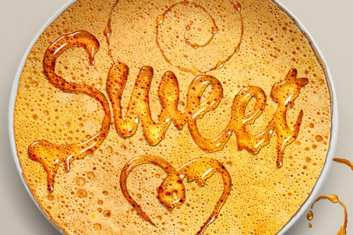

Вопрос долголетия волновал умы людей всех времен, стран и народов. Сб этом свидетельствуют иероглифы Древнего Египта и Китая, древние памятники Индии и Греции. Для поддержания здоровой и долгой жизни необходим правильный режим питания. Мыслители и врачи древности придавали меду огромное значение, считая, что употребление его в пищу способствует продлению человеческой жизни. Нередко люди, регулярно питающиеся медом, доживают до глубокой старости.

Долгое время мед был основным источником сладости для человека, поэтому наложил отпечаток на меню сладкого стола в Европе. Преимущественно мед использовался в кондитерских изделиях (пряниках, коврижках и др.). А также в напитках, на Среднем и Ближнем Востоке - для заливки горячих кондитерских изделий (например пахлавы). После появления сахара употребление меда в кулинарных и кондитерских изделиях резко сократилось. Но сегодня, оценив максимальную полезность меда по его витаминному и минеральному составам, осознав вредность рафинированных продуктов, в том числе сахара, люди вновь обратились к натуральному продукту - меду.
Предлагаемые рецепты мучных кондитерских изделий, холодных и горячих медовых напитков, овощных и фруктовых блюд с медом при правильном их подборе и систематическом употреблении восполнят пробел в вашем ежедневном питании и позволят корректировать витаминную и минеральную ценность суточного рациона на протяжении всего года, продлят молодость, активное долголетие.
Приятного аппетита и будьте здоровы!
Напиток из овса
Вода - 1,5 л
овес - 1,5 стакана
мед - 1 ст. ложка
лимон - 0,5 шт.
Выход - 1 л.
Овес залить холодной водой и довести до кипения. Настаивать в теплом месте 3-4 ч. Затем добавить мелко нарезанную или натертую на крупной терке цедру лимона, процедить, добавить мед, лимонный сок. Подавать теплым.
Напитки, приготовленные на основе овсяных отваров и пшеничных отрубей, рекомендуются не только как утоляющие жажду, но и в лечебных целях людям, страдающим заболеваниями сердечно-сосудистой системы, желудочно-кишечного тракта, нарушением обмена веществ; с добавлением сушеных или свежих фруктов эти напитки приобретают свойства общеукрепляющих, тонизирующих.
Напиток из инжира и моркови
Вода - 0,5 л
инжир сушеный - 1 стакан
сок морковный - 1 стакан
мед - по вкусу
Выход - 1 л.
Инжир хорошо промыть теплой водой, пропустить через мясорубку. Измельченную массу залить кипятком, размешать, довести до кипения. Снять с огня и дать настояться 1-2 ч, процедить, добавить мед и охладить. Затем влить морковный сок.
Напиток каротиновый
Вода - 1 стакан
сок морковный - 2 стакана
сок апельсиновый - 1 стакан
лимон - 2 шт.
мед - 1 ст.ложка
Выход - 1 л.
Мед растворить в кипяченой охлажденной воде, смешать с соком моркови, апельсина и лимона. Хорошо охладить. При подаче в стакан положить кусочек лимона.
Напиток из меда и липовых цветков
Вода - 10 л
мед - 800 г
липовых цветков столько, чтобы настой стал золотистого цвета
лимонной кислоты по вкусу.
Высушенные цветки залить крутым кипятком, настоять полчаса, процедить, добавить мед и лимонную кислоту. Напиток охладить.
Сок лимона с медом
Минеральная вода - 500 г (нарзан, боржоми)
мед - 50 г
сок 1 лимона.
Медовуха
Вода - 8-10 л
мед - 3-3,5 кг
хмель - 120-150 г
дрожжи - 4 чайных ложки.
Кипяченую воду остудить до комнатной температуры, добавить мед, хмель и дрожжи. После брожения напиток профильтровать, охладить, через 1,5-2 месяца он готов к употреблению. Хранить в прохладном месте.
Гоголь-моголь
Молоко - 2 стакана
мед - 6 ст. ложек,
яйцо – 1шт.
лимонный или апельсиновый сок - 2 ст. ложки.
Яйцо, холодное молоко, мед и сок смешать и взбить до получения однородной массы. Подавать к столу в охлажденном виде.
Медово-сливочный напиток с апельсиновым соком
Сливки -100 г
мед - 1 ст. ложка
апельсиновый сок - 100 г
1 желток.
Все хорошо перемешать, подавать холодным.
Коктейль медовый
Молоко - 100 г
мед - 35 г
яйцо (желток) - 1 шт.
корица - 2 г
Выход - 150 мл.
Перед употреблением коктейль посыпать молотой корицей.
Пунш медовый "Апельсин"
На 1 стакан напитка
воды -100 г,
сиропа апельсинового - 10 г,
сока апельсинового - 20 г, цедры лимона - 1 г,
гвоздики - 0,2 г.
Цедру и гвоздику заварить кипящей водой, процедить, добавить в напиток мед, сироп, сок и перемешать, затем еще раз процедить и перелить в подготовленную посуду.
Рябиновое варенье с медом
Ягоды рябины - 500 г
сахар -300 г
мед - 450 г
Выход - 1 кг варенья.
Собранные после первых морозов ягоды рябины перебрать, удалить плодоножки, промыть в холодной воде и облить кипятком. Затем положить залить горячим сиропом примерно на 1-1,5 ч, после чего варить до легкого загустения сиропа. Чтобы ягоды хорошо пропитались сладостью, их необходимо выдержать в сиропе в течение 6-7 ч, после чего снова варить до готовности.
Торт "Пчелка"
Мука - 3 стакана
маргарин - 150 г.
сахар-песок - 6 ст. ложек
дрожжи - 30 г.
Начинка
Мед -80 г
миндаль орехи - 200 г
горький миндаль - 5 плодов
дрожжи -30 г
яйца - 4 шт.
молоко - 4 ст. ложки
соль - щепотка
Приготовить дрожжевое тесто. В мед добавить маргарин, сахар, прокипятить, положить натертый сладкий и горький миндаль. Когда масса остынет, добавить яйца, молоко, соль. Полученную массу выложить на тесто. Печь 25 мин.
Пасечный торт
Мука - 3 стакана
мед - 400 г
сахар -1 стакан
яйца - 5 шт.
сметана - 1 стакан
гвоздика и корица размельченная (немного)
сода -1ч. ложка.
Растопить мед, взять сахар, яйца, сметану, немного гвоздики и корицы размельченной, добавить соду, муку, все перемешать до густоты сметаны. Затем тесто вылить на противень, смазанный маслом, и выпекать в духовке при умеренной температуре.